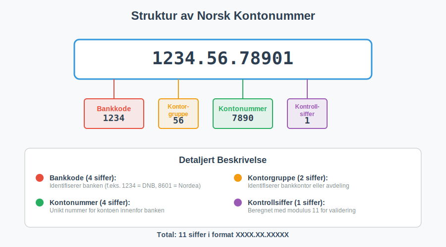
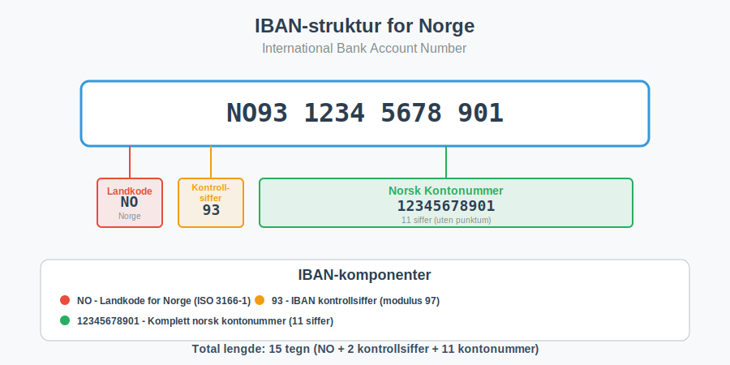
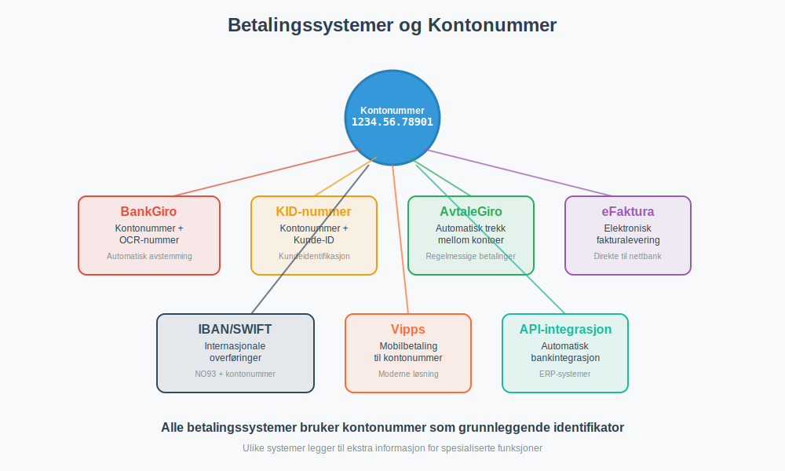

Et kontonummer er en unik numerisk identifikator som banker bruker for å identifisere individuelle bankkontoer. I Norge følger kontonummer en standardisert struktur som sikrer entydig identifikasjon av alle bankkontoer i det norske finanssystemet. Kontonummer er essensielt for alle banktransaksjoner og spiller en kritisk rolle i bankavstemming og regnskapsføring.
Seksjon 1: Struktur av Norske Kontonummer
Norske kontonummer følger en standardisert 11-sifret struktur som er regulert av Finanstilsynet og administrert av Bits (tidligere Bankenes Betalingssentral). Denne strukturen sikrer at alle kontonummer i Norge er unike og kan valideres automatisk.

1.1 Oppbygging av Kontonummer
Et norsk kontonummer består av følgende komponenter:
| Posisjon | Antall siffer | Beskrivelse | Eksempel |
|---|---|---|---|
| 1-4 | 4 siffer | Bankkode - Identifiserer banken | 1234 |
| 5-6 | 2 siffer | Kontorgruppe - Identifiserer bankkontor/avdeling | 56 |
| 7-10 | 4 siffer | Kontonummer - Unikt nummer innenfor banken | 7890 |
| 11 | 1 siffer | Kontrollsiffer - Validerer kontonummerets gyldighet | 1 |
Eksempel: 1234.56.78901
- Bank: 1234 (f.eks. DNB)
- Kontor: 56
- Konto: 7890
- Kontroll: 1
1.2 Kontrollsiffer og Validering
Kontrollsifferet beregnes ved hjelp av en matematisk algoritme (modulus 11) som sikrer at kontonummeret er gyldig. Dette forhindrer feil ved manuell inntasting og automatiserer validering i betalingssystemer.
Beregning av Kontrollsiffer:
- Vektfaktorer: Hvert siffer multipliseres med en vektfaktor
- Summering: Alle produkter summeres
- Modulus 11: Summen deles med 11, og resten brukes til å beregne kontrollsifferet
- Validering: Kontrollsifferet må stemme for at kontonummeret skal være gyldig
Dette systemet sikrer at over 99% av feilskrevne kontonummer oppdages automatisk, noe som er kritisk for elektronisk fakturering og automatiserte betalingsløsninger.
Seksjon 2: IBAN og Internasjonale Standarder
For internasjonale transaksjoner brukes IBAN-nummer (International Bank Account Number), som inkluderer det norske kontonummeret i en standardisert internasjonal format. Dette er essensielt for bedrifter som driver engroshandel eller har internasjonale forretningsforbindelser.

2.1 Norsk IBAN-format
Et norsk IBAN består av 15 tegn og følger denne strukturen:
| Posisjon | Innhold | Beskrivelse | Eksempel |
|---|---|---|---|
| 1-2 | NO | Landkode for Norge | NO |
| 3-4 | 93 | Kontrollsiffer (beregnet) | 93 |
| 5-15 | 12345678901 | Norsk kontonummer (11 siffer) | 12345678901 |
Komplett IBAN-eksempel: NO9312345678901
2.2 BIC-koder og SWIFT
I tillegg til IBAN brukes ofte BIC-koder (Bank Identifier Code) for å identifisere mottakerbanken i internasjonale overføringer. BIC-koder er spesielt viktige for bedrifter som håndterer fjernleverbare tjenester til kunder i utlandet.
Seksjon 3: Kontonummer i Regnskapssammenheng
Kontonummer spiller en sentral rolle i moderne regnskapsføring og er grunnleggende for korrekt bokføring av banktransaksjoner. Alle bedrifter må ha systematisk kontroll over sine bankkontoer for å oppfylle bokføringslovens krav.
3.1 Bankkontoer i Kontoplanen
I regnskapet registreres bankkontoer typisk under følgende kontoklasser:
| Kontotype | Kontoklasse | Beskrivelse | Eksempel |
|---|---|---|---|
| Driftskontoer | 1900-1929 | Daglige kontanter og bankinnskudd | 1900 - Kontanter, 1920 - Bankinnskudd |
| Sparekontoer | 1930-1949 | Kortsiktige bankinnskudd | 1930 - Sparekonto |
| Valutakontoer | 1950-1969 | Kontoer i utenlandsk valuta | 1950 - USD-konto |
| Bundne midler | 1970-1989 | Bundne bankinnskudd og deposita | 1970 - Bundne midler |
3.2 Bankavstemming og Kontroll
Bankavstemming er en kritisk kontrollprosess hvor bedriftens regnskapsførte banksaldo sammenlignes med bankens kontoutskrift. Dette sikrer at alle transaksjoner er korrekt registrert og at det ikke er uoppdagede feil eller mangler.
Månedlig Avstemmingsprosess:
- Innhenting av kontoutskrift fra banken
- Sammenligning med regnskapsførte transaksjoner
- Identifikasjon av differanser og uavstemt poster
- Korrigering av feil og mangler
- Dokumentasjon av avstemmingen for revisjonsformål
Moderne regnskapssystemer kan ofte automatisere mye av denne prosessen gjennom automatisk bankintegrasjon, hvor transaksjoner importeres direkte fra banken og matches mot regnskapspostene.
Seksjon 4: Betalingssystemer og Kontonummer
Kontonummer er grunnleggende for alle elektroniske betalingssystemer i Norge. Ulike betalingsløsninger bruker kontonummer på forskjellige måter for å sikre korrekt og sikker overføring av midler.

4.1 Tradisjonelle Betalingsmetoder
BankGiro og OCR
BankGiro bruker mottakerens kontonummer kombinert med OCR-nummer for automatisk identifikasjon og avstemming av betalinger. Dette er særlig viktig for bedrifter som mottar mange fakturaer og trenger automatisk avstemming.
KID-nummer
KID-nummer (Kunde-IDentifikasjon) brukes sammen med kontonummer for å automatisk identifisere hvilken kunde eller faktura en betaling gjelder. Dette er essensielt for effektiv kundeoppfølging.
4.2 Moderne Betalingsløsninger
AvtaleGiro
AvtaleGiro krever både betalerens og mottakerens kontonummer for å etablere automatiske trekkavtaler. Dette er den mest brukte løsningen for regelmessige betalinger som husleie, forsikringer og abonnementer.
eFaktura
eFaktura leveres direkte til kundens nettbank ved hjelp av kontonummer som identifikator. Dette eliminerer behovet for papirfakturaer og reduserer fakturagebyr.
Seksjon 5: Sikkerhet og Personvern
Kontonummer inneholder sensitiv finansiell informasjon og må behandles i henhold til GDPR og norsk personvernlovgivning. Bedrifter som håndterer kunders kontonummer har særlige forpliktelser knyttet til datasikkerhet og personvern.
5.1 Sikkerhetstiltak
Kryptering og Lagring
- Kryptert lagring av kontonummer i databaser
- Sikre overføringskanaler (HTTPS/TLS) for elektronisk kommunikasjon
- Tilgangskontroll - kun autorisert personell har tilgang
- Logging og overvåking av alle tilganger til kontonummerdata
Compliance og Regelverk
Bedrifter må følge:
- PCI DSS for betalingskortdata
- Betalingstjenestedirektivet (PSD2) for betalingstjenester
- Finanstilsynets retningslinjer for datasikkerhet
- Personvernforordningen (GDPR) for behandling av personopplysninger
5.2 Beste Praksis for Bedrifter
Håndtering av Kontonummer
- Minimering: Samle kun nødvendige kontonummer
- Formålsbegrensning: Bruk kun til avtalt formål
- Oppbevaringstid: Slett når ikke lenger nødvendig
- Sikker deling: Bruk sikre kanaler ved deling
- Opplæring: Tren ansatte i sikker håndtering
Seksjon 6: Automatisering og Integrasjon
Moderne regnskapssystemer og ERP-systemer integrerer kontonummer i automatiserte prosesser for å øke effektiviteten og redusere feil i finansielle transaksjoner.
6.1 API-integrasjoner
API-integrasjon mellom banker og regnskapssystemer muliggjør:
- Automatisk import av banktransaksjoner
- Sanntids banksaldo i regnskapssystemet
- Automatisk avstemming av inn- og utbetalinger
- Varsling ved uventede transaksjoner eller lav saldo
6.2 Validering og Kvalitetssikring
Moderne systemer implementerer automatisk validering av kontonummer:
Teknisk Validering
- Format-kontroll: Sjekk av 11-sifret struktur
- Kontrollsiffer-validering: Matematisk verifikasjon
- Bank-validering: Kontroll mot oppdaterte banklister
- IBAN-konvertering: Automatisk generering av IBAN-format
Forretningslogikk
- Duplikat-kontroll: Forhindre registrering av samme konto flere ganger
- Aktivitetssporing: Overvåking av uvanlige transaksjoner
- Compliance-sjekk: Automatisk kontroll mot sanksjons- og svartelister
Seksjon 7: Fremtidige Utviklingstrender
Det norske betalingssystemet utvikler seg kontinuerlig, og kontonummer vil fortsette å spille en sentral rolle i fremtidens finansielle infrastruktur.
7.1 Digitalisering og Fintech
Fintech-selskaper utvikler innovative løsninger som bygger på kontonummer-infrastrukturen:
- Øyeblikkelige betalinger: Sanntidsoverføringer mellom kontoer
- Åpen bankvirksomhet: API-er som gir tredjeparter tilgang til kontoinformasjon
- Kunstig intelligens: Automatisk kategorisering og analyse av transaksjoner
- Blockchain-integrasjon: Hybrid løsninger som kombinerer tradisjonelle kontonummer med distribuerte systemer
7.2 Regulatoriske Endringer
Fremtidige endringer i regelverk vil påvirke hvordan kontonummer brukes:
- Økt transparens: Krav til bedre sporing av pengestrømmer
- Miljørapportering: Kobling mellom banktransaksjoner og ESG-rapportering
- Automatisert rapportering: Direkte rapportering fra banker til skattemyndigheter
Konklusjon
Kontonummer er en fundamental komponent i det norske finanssystemet som muliggjør sikker, effektiv og sporbar håndtering av alle banktransaksjoner. For bedrifter er forståelse av kontonummer-systemet essensielt for:
- Korrekt regnskapsføring og bokføring
- Effektiv bankavstemming og finansiell kontroll
- Automatisering av betalingsprosesser og fakturabehandling
- Compliance med regnskaps- og personvernlovgivning
- Sikker håndtering av finansielle data
Ved å implementere beste praksis for håndtering av kontonummer kan bedrifter oppnå bedre finansiell kontroll, redusere risiko for feil, og forberede seg for fremtidens digitale betalingsløsninger.